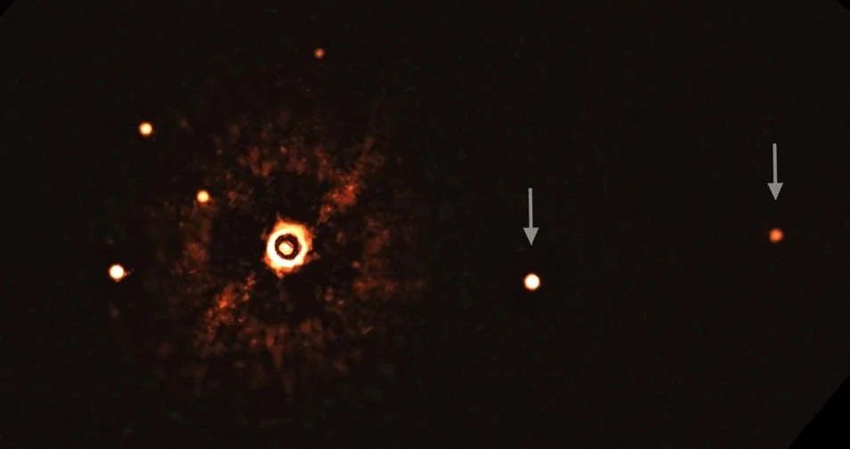

July 22, 2020
First image of a multi-planet system around a Sun-like star
On the right you can see the first direct image of an exoplanet system with several planets orbiting a Sun-like star. It consists of two gas giants, which are marked with arrows. They orbit the star TYC 8998-760-1 of spectral class K3 IV, about 310 light-years away. With a surface temperature of 4500 kelvin, the star is somewhat cooler than the Sun and still very young (16.7 million years). The planetary system was imaged by the SPHERE instrument of the European Southern Observatory. The other points of light are background stars.